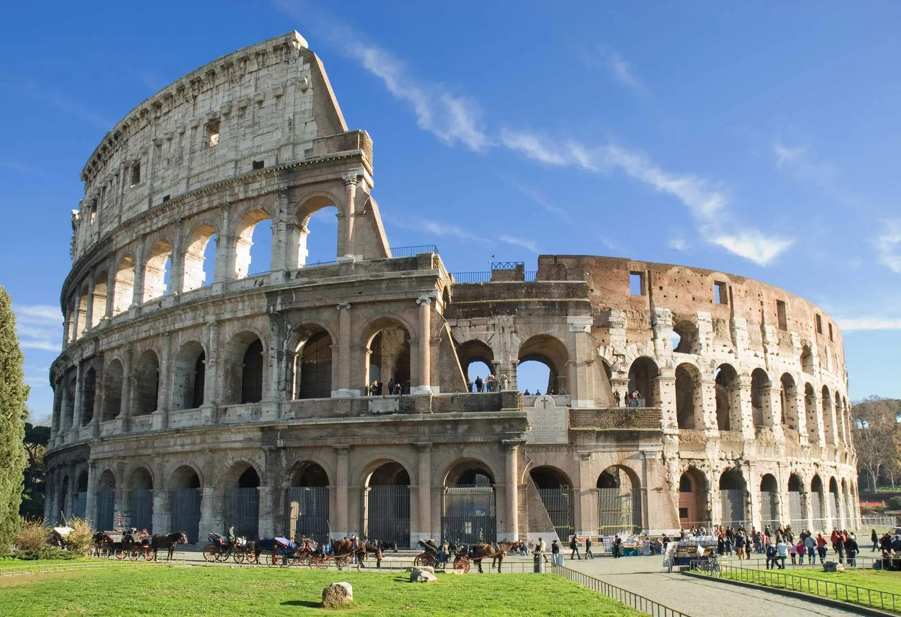
Destination Guide
Rome
Two thousand years of history stacked on top of each other — ancient ruins, Baroque fountains, and a plate of cacio e pepe on every corner.
Best Time to Go
Apr–Jun, Sep–Oct
Fly Into
Fiumicino (FCO)
Currency
Euro (EUR)
Suggested Stay
4–5 days
Why go
Rome is the rare city where the headline sights live up to the hype — the Colosseum, the Pantheon and the Vatican sit within a few kilometres of each other — and the everyday pleasures are just as memorable: espresso standing at the bar, a long lunch, and an evening stroll through a floodlit piazza.
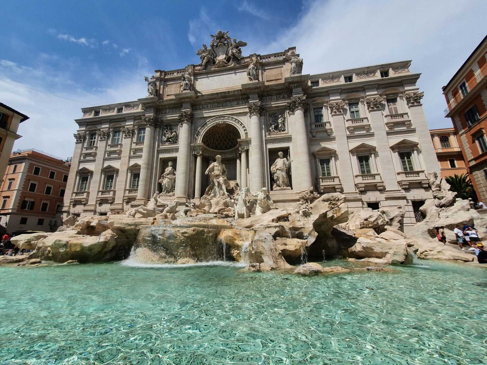
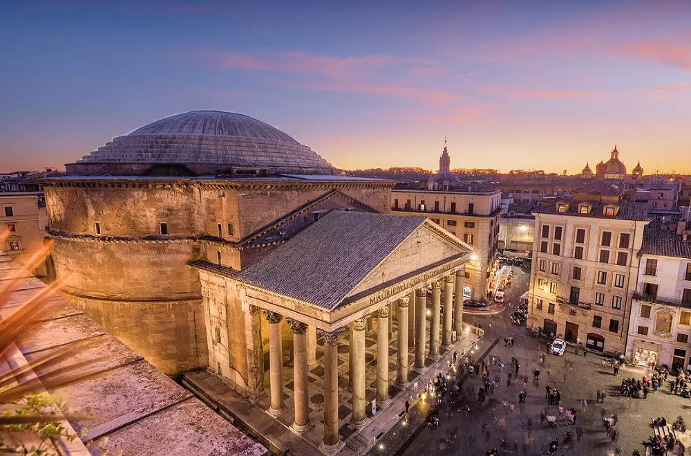
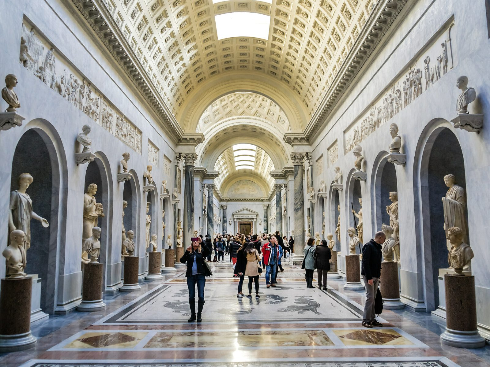
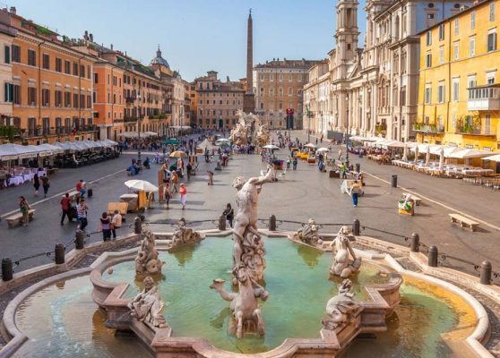
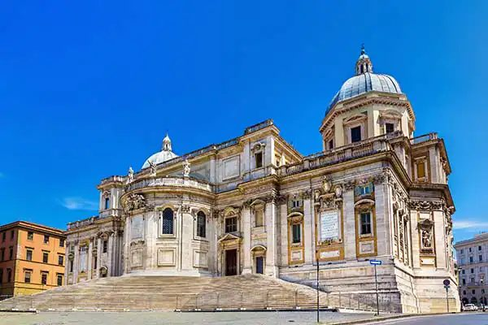
Where to Stay — Centro Storico & Monti
Most first-timers base themselves in the historic centre between the Pantheon, Trevi and the Spanish Steps, or in Monti near Termini and the Colosseum — everything major is walkable or a short metro ride away.
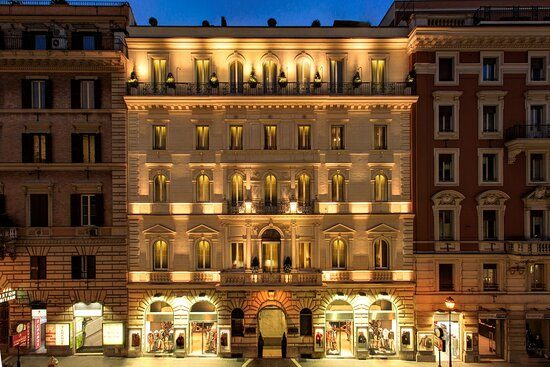
Hotel Artemide, Via Nazionale
A polished four-star on Via Nazionale, a short walk from Termini, Monti and the Trevi Fountain — with a rooftop terrace for evening drinks.
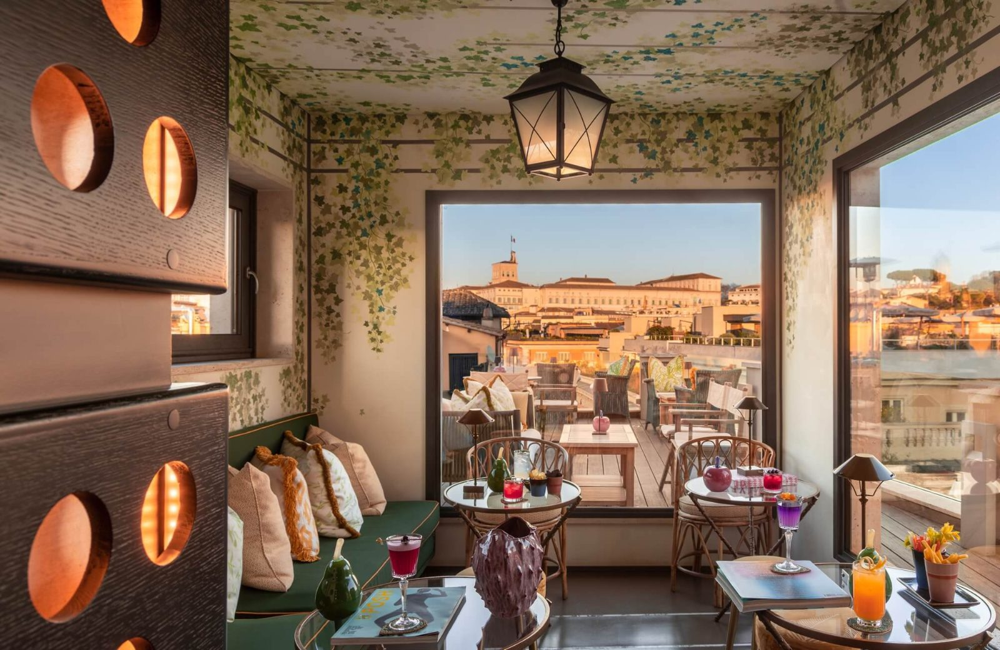
Singer Palace Hotel
A boutique hotel in the historic Singer building just off Via del Corso, with a plant-filled rooftop bar looking across the domes to the Quirinal Palace.
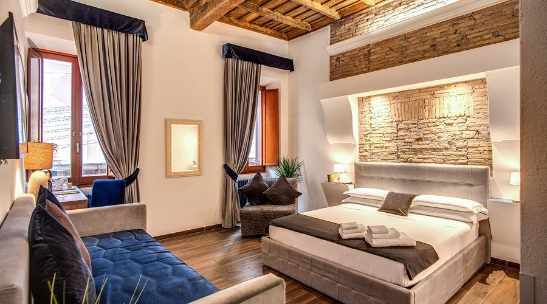
Rooms by the Spanish Steps
Boutique guesthouses around Piazza di Spagna pair exposed Roman brick and wood-beamed ceilings with designer shopping on the doorstep.
Where to Go
Rome's highlights cluster in a compact centre — you can walk from the Colosseum to the Pantheon in 25 minutes, passing a dozen churches and ruins on the way. Book the big-ticket sights online in advance.
Vatican Museums
Miles of galleries ending in the Sistine Chapel — Raphael's Rooms, the Gallery of Maps and Michelangelo's ceiling. Book a timed slot and arrive early.
Trevi Fountain
Rome's most famous Baroque fountain. Toss a coin over your shoulder to guarantee a return trip — early morning or late at night beats the crowds. A small ticket now applies for the area closest to the basin.
Pantheon
A 2,000-year-old temple with the world's largest unreinforced concrete dome and its open oculus — still the most impressive room in Rome.
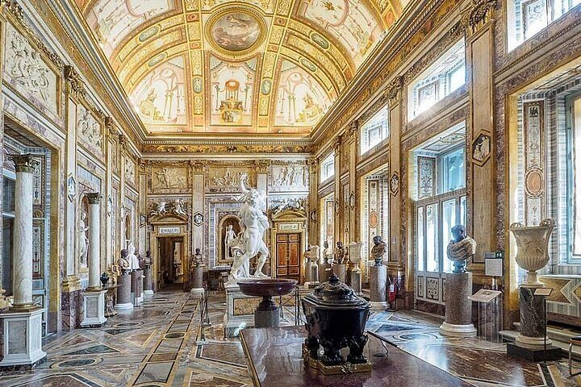
Galleria Borghese
Bernini sculptures and Caravaggio paintings in a frescoed villa inside the Villa Borghese park. Entry is by reserved two-hour time slot only.
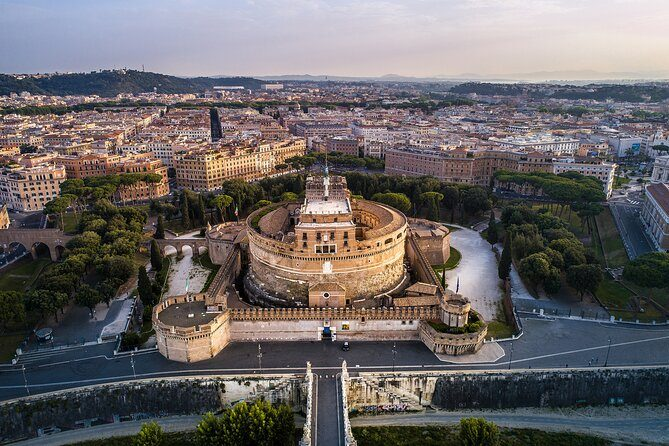
Castel Sant'Angelo
Hadrian's mausoleum turned papal fortress on the Tiber, with a rooftop terrace that has one of the best views of St Peter's.
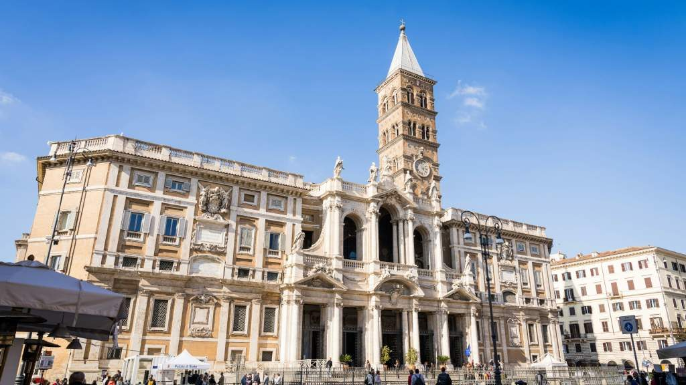
Santa Maria Maggiore
One of Rome's four papal basilicas, with 5th-century mosaics and a gilded coffered ceiling — free to enter and a short walk from Termini.
For people-watching, Piazza Navona is hard to beat — Bernini's Fountain of the Four Rivers, street artists and café terraces laid out on the oval of an ancient Roman stadium.
Where to Eat & Drink — Rooftops & Trattorias
Romans eat late and linger long. Book rooftop tables for sunset, and don't leave without trying the four classic pastas: carbonara, cacio e pepe, amatriciana and gricia.
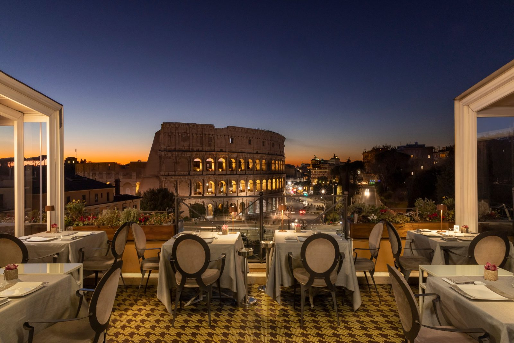
Aroma, Palazzo Manfredi
A Michelin-starred rooftop restaurant directly facing the Colosseum — the ultimate special-occasion dinner, best booked for sunset.
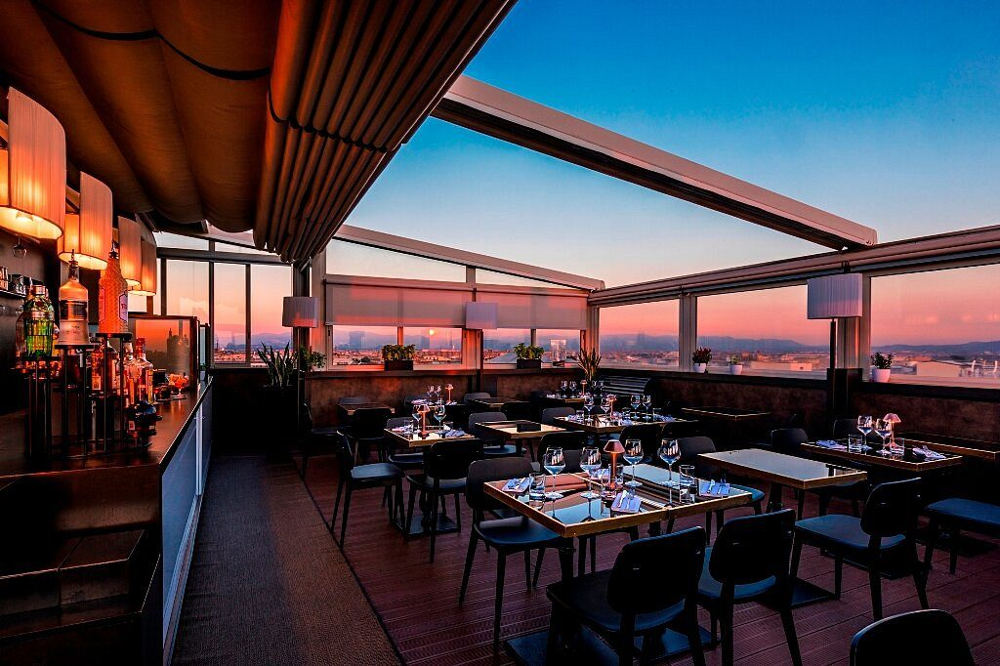
Terrazza Cielo
A glass-sided rooftop restaurant and cocktail bar with sweeping sunset views across the city's rooftops and domes.
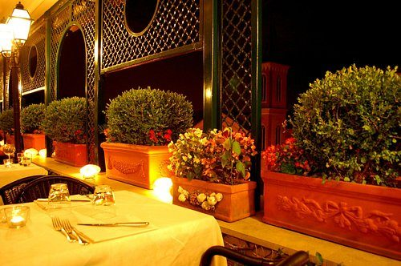
Ciampini
A long-standing Roman favourite for gelato, aperitivo and candlelit terrace dinners, close to the Spanish Steps.
Beyond the Centre: Parks, Trastevere & Zoomarine
When you need a break from monuments, rent a rowing boat on the lake in Villa Borghese, wander Trastevere's ivy-draped lanes for dinner across the Tiber, or take the kids to Zoomarine — a marine park with dolphin shows and water slides about 40 minutes south of the city near Pomezia.
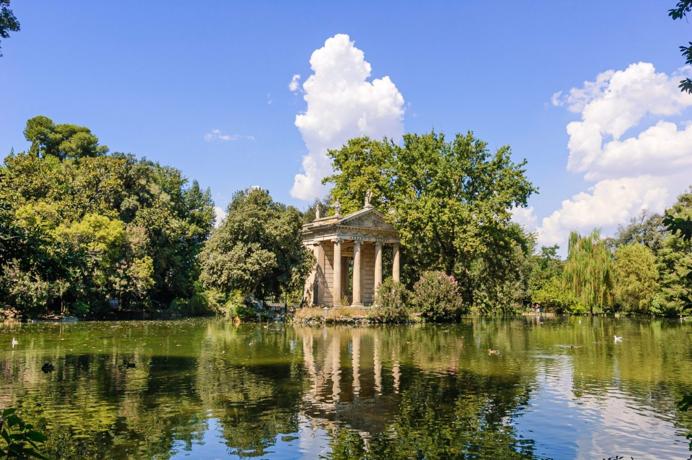
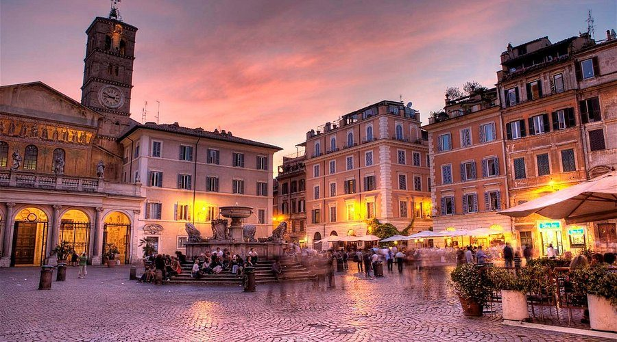
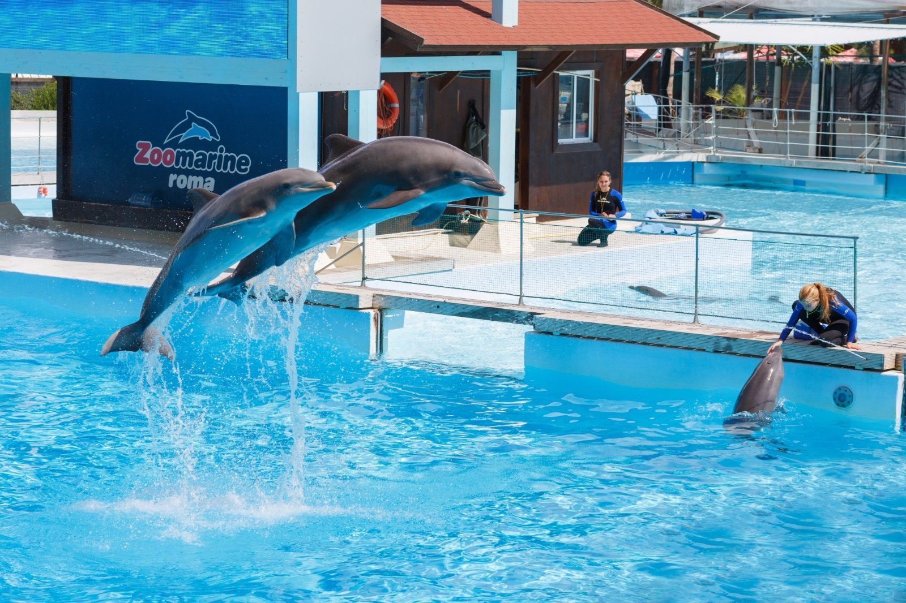
Getting There
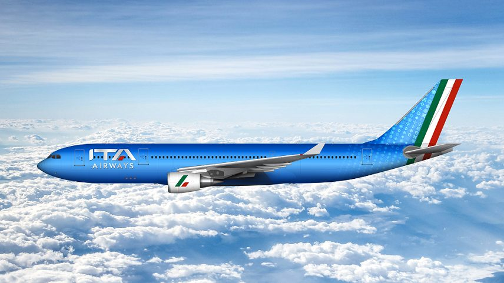
ITA Airways
Italy's national airline flies into its Rome Fiumicino hub from across Europe, Africa, the Middle East and the Americas, with easy onward connections around Italy.
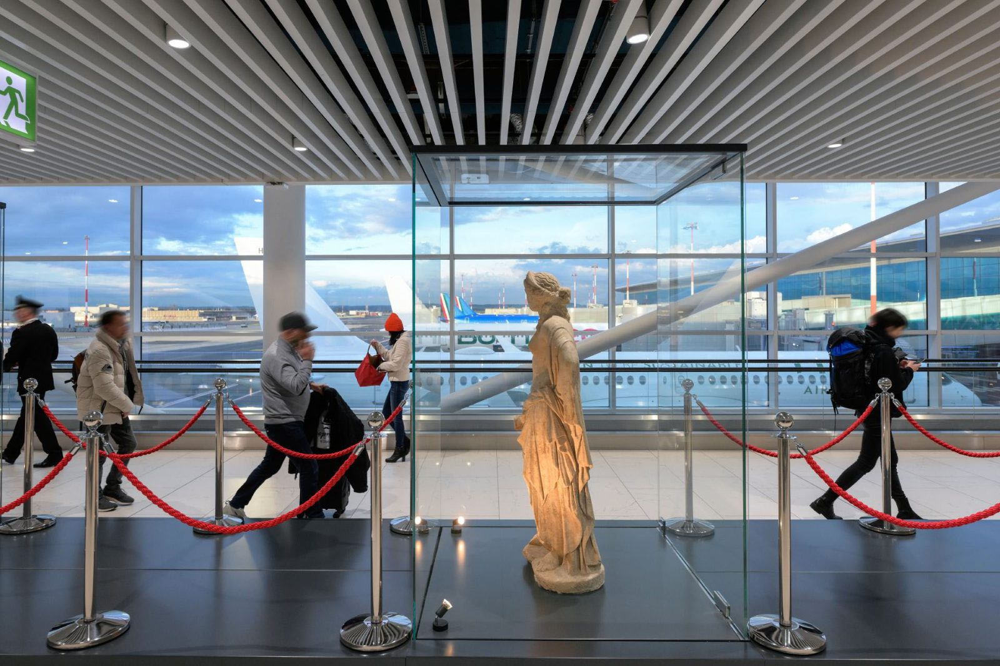
Rome Fiumicino Airport (FCO)
Leonardo da Vinci–Fiumicino is Rome's main airport. The Leonardo Express train reaches Termini in about 32 minutes, and taxis to the centre charge a fixed fare.
A Simple 4-Day Route
Day 1
Ancient Rome
Colosseum, Roman Forum and Palatine Hill; sunset from the Aventine and dinner in Monti.
Day 2
The Vatican
Vatican Museums and the Sistine Chapel in the morning, St Peter's Basilica, then Castel Sant'Angelo at golden hour.
Day 3
Centro Storico
Pantheon, Piazza Navona, Trevi Fountain and the Spanish Steps — finish with a rooftop aperitivo.
Day 4
Borghese & Trastevere
Galleria Borghese and the park in the morning, then cross the river for dinner in Trastevere.
Good to Know
Getting around
The centre is best explored on foot. Metro lines A and B reach the Colosseum, Termini, the Spanish Steps and the Vatican; buses and trams fill the gaps, and contactless bank cards work at the gates.
Entry requirements
Italy is in the Schengen Area. Many nationalities can visit visa-free for up to 90 days, and the EU's Entry/Exit System registers non-EU travellers at the border. Check the latest rules for your passport before you fly.
Dress & customs
Shoulders and knees must be covered to enter churches, including St Peter's. Hotels add a nightly city tourist tax, usually paid at check-in or check-out.
Start Planning Your Rome Trip
Compare flights to Rome Fiumicino, and browse hotels across the historic centre, Monti and Trastevere, in one place.